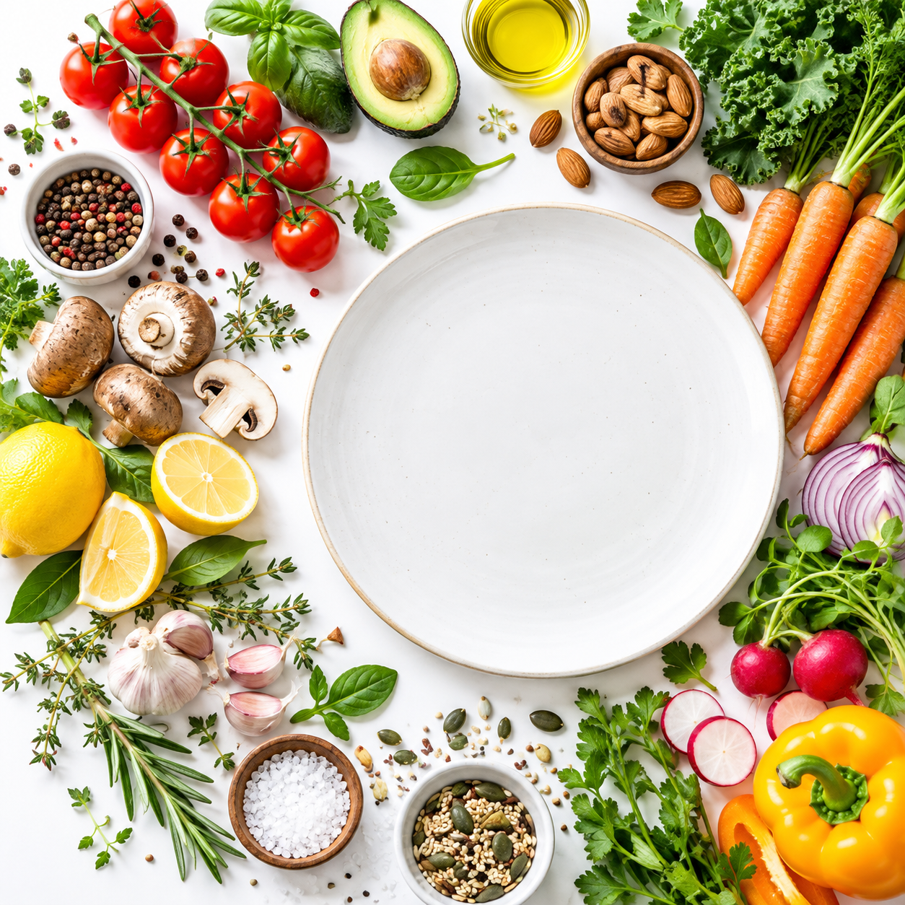

料理から探す
料理名や料理に含まれる言葉で絞り込みます
食材で絞り込む
今ある食材 「、」やスペース区切り冷蔵庫にある食材を入力しましょう
入れたくない食材・調味料苦手な食材や避けたいものを入力
食材から選ぶ
使いたい食材
使いたくない食材
時間・お金・器具
調理時間: 1人前の価格: 使える調理器具料理のタイプ
区分 未選択ならすべて 料理の種類(何風か) 味旬・栄養
旬の月 カロリー(1人前): たんぱく質(1人前):その他
レシピの基準人数 足りない食材の数: 足りない食材の下限価格・栄養は1人前の目安です。

RECIPE EXPLORER
料理を探す
食材や条件に合う料理を、グラフ上で比べながら見つけられます。
読み込み中…
今すぐ作れる料理ランキング
不足食材が0個の料理だけを、調理時間が短い順に表示します。
最短時間ランキング
料理名を押すと詳細、比較ボタンで右のグラフに追加します。
選んだ料理を比べる 最大3品
軸を切り替えて、選んだ料理の位置関係を比べられます。
マスの色が濃いほど、条件に合う料理が多い。点は並び順の上位です。ホイール・ピンチ・＋で拡大すると(2倍以上)、表示範囲内の料理が系統色の半透明な点で出ます。倍率に合わせて点も大きくなります。押しながらドラッグすると動かせます。マスを押すとそこへ寄ります。点を押すとレシピの詳細が開きます。
分類ツリー
条件に合う料理を順に分類します。丸い枝を押すと、その分類を開いたり閉じたりできます。黒枠の料理は買い足しなしで作れます。
各分類では、条件により近い料理から12品ずつ表示します。「さらに表示」を押すと続きが出ます。料理名を押すと詳細を開きます。
買い足し候補のつながり図
左が今ある食材、中央が候補の料理、右が足りない食材です。右の丸が大きいほど、多くの料理に使われます。黒枠の料理は買い足しなしで作れます。
PICK UP
おすすめのレシピ
候補の料理 クリックでレシピを表示
比較する7項目の重みを調整する
重みは自動で正規化します。0にするとその項目を比較から外します。
類似検索を準備しています…
近い料理 TOP 8
類似度とその内訳
※ 本機能は説明可能な特徴量ベースの類似検索です。文章AIの意味埋め込みではありません。 味・栄養・調理時間には推定値が含まれ、スコアは好みの一致確率を示しません。